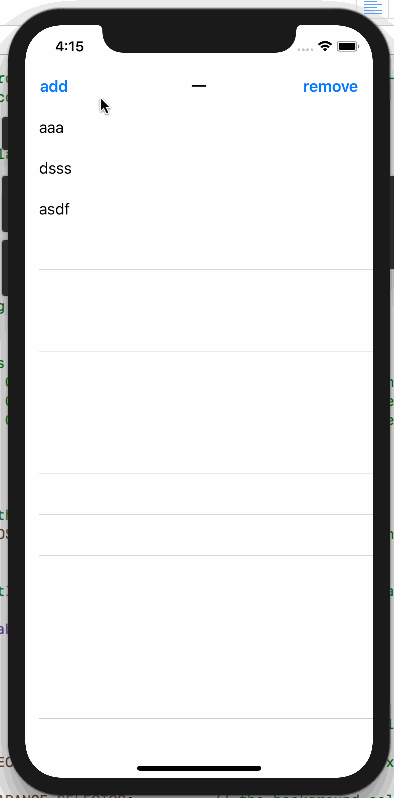

需求
在项目中，需要一个视图，在TableView没有数据的时候遮盖在其上面，用于提醒用户没有数据并提供用户点击刷新功能。
效果

思路
下面记录一下我的心路历程：
我刚开始的思路就是直接在控制器中，判断作为数据源的数组是否有数据，如果没有，初始化一个视图add在TableView上面。这样做是可行的，但是当需要遮罩的TableView很多的时候，就需要次次都添加，很麻烦。
于是想到了分类，在TableView的分类中做判断。但是入口该怎么取呢？
因为不是所有的TableView都需要遮罩视图，所以不能使用Method Swizzling。
其实方法很简单，创一个方法作为入口，在该方法中判断是否需要添加遮罩，然后调用一下- (void)reloadData;。完成。
下面有一个问题，该分类如何知道数据源数组是否有数据。
我的做法是，使用runtime设置TableView的array属性，在控制器中传入数组即可。
下面还有一个问题，遮罩视图该如何设置。
我的做法是，还是通过使用runtime设置TableView的placeholerView属性，可以在设置TableView之前，把遮罩视图创建好，传过去。同时，设置了默认的placeholerView属性，在没有传placeholerView时，会添加默认的遮罩视图。（如效果的“一”控制器）
实现
1 | - (void)yq_reloadData |
上面的代码是主要的实现，我省略了默认placeholderView的设置，也省略了placeholderView array的setter getter方法。都比较简单。
使用
1 | UITableView *tableView = [[UITableView alloc] initWithFrame:self.view.bounds style:UITableViewStylePlain]; |
只需在初始化时传入tableView.array和tableView.placeholerView，在需要刷新时调用yq_reloadData即可。